- 给人阅读， AI无法理解
- 无结构约束
- 不便于管理
如何搭建一个Skill？
以TikTok Platform Design为例
Skill是“AI能执行并理解的设计系统”
- 强结构约束、便于AI理解，并调用设计系统
- 精准被理解，基础设计系统输出符合品牌形象的设计界面，可持续演化
my-skill/
SKILL.md# Required: instructions + metadata
scripts/# Optional: executable code
references/# Optional: documentation
assets/# Required: templates, resources
一句话
skill.md
是AI可执行的上下文
壹
"Npm + Skills"
使用semi/antd等一代设计系统来保持生成的持续、统一、甚至交付
贰
"Only Skills"
进行美学探索，并for其他/扩展新业务
SECTION 01
Variables \ Styles 的重新定义
我在TikTok这部分的定义主要是围绕AI能够理解的设计系统，在我们的设计系统当中AI并不能理解我们的命名，所以要对齐进行重构，同时还需把我们这部分内容转化为markdown格式。涉及 Color、Typography、Radius、Space、Shadow、Grid、Iconography等。
第一阶段：Token规范化
首先尝试将原先的Token尝试喂给AI，但是由于TTEP前期的token体系并不规范，AI难以理解。所以本次需要规范化token体系，从base token开始搭建。但是不改变16进制编码，仅改变命名（除非想改动视觉样式）
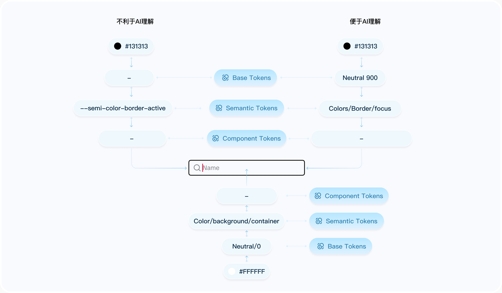
第二阶段：资产的标准化建设
首先：我们对Foundation部分进行整理并重构内容，需要将其用作的目的、对应的token、使用规则和什么能做什么不能做进行定义转化为markdown格式。
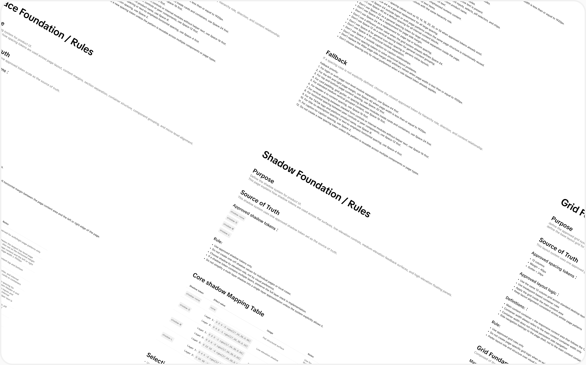
SECTION 02
样式还原涉及HTML \ CSS \ JSON \ MD
这一部分其实若有NPM包便不用涉及该步骤，若未有NPM包需要进行样式100%还原，在这一步涉及的时长会多一些。样式还原涉及的组件需要有HTML\CSS\JSON\MD,样式能还原在90%以上很大程度在css和json上，所以必须含有这几个文件。
第一阶段：组件还原
通过vibe coding工具进行样式还原，让他生成这几个文件，在修复时需要同步这几个文件。模型尽量选择Claude Opus4.7或者GPT5.5，等样式还原完成后cursor自带模型也可以进行还原。
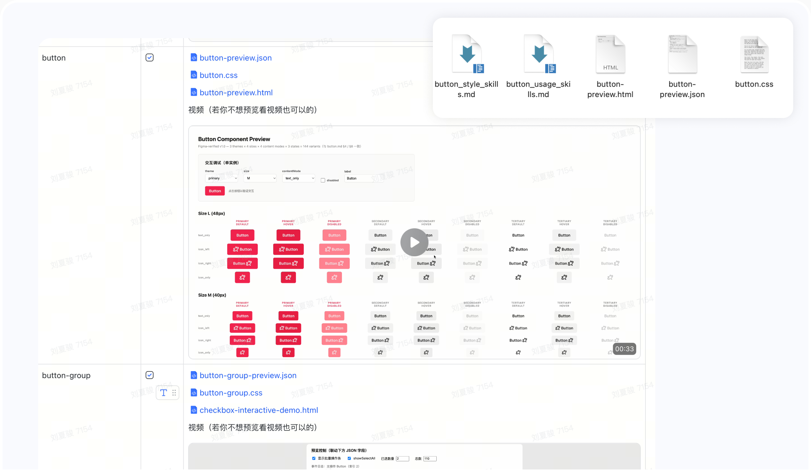
第二阶段：Patterns and Templates
通过原子级组件还原完毕，需要去完成patterns部分，eg:table、side-navigation等。以及需要制作Templates来帮助AI进行理解。
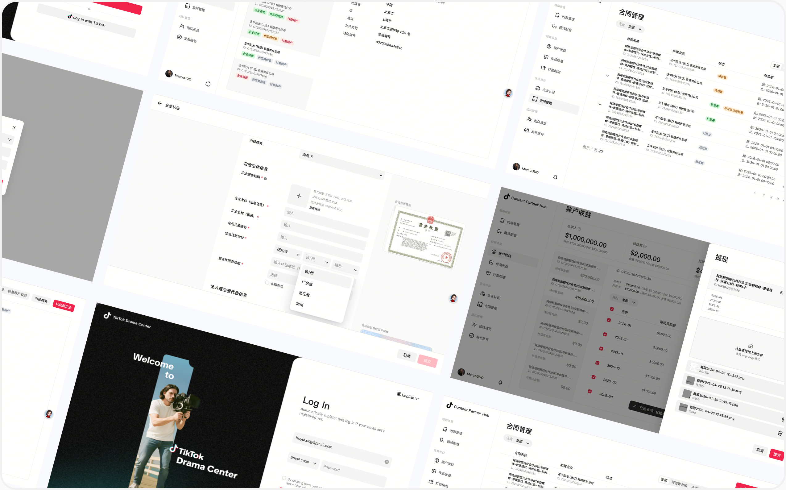
SECTION 03
Assets
这一步将我们的设计资产icon\illustration\image\flag进行打包封装，设计师在figma库当中需要以组件的形式创建和管理所有图标，并严格遵循命名规范，导出svg格式便于AI进行调用。同时还需要写usage_skill_md强化使用。
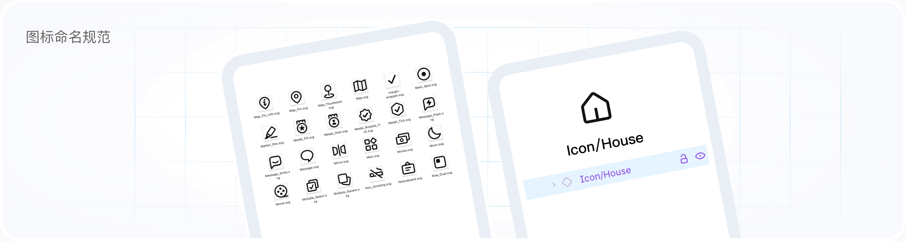
Token转化css实现基础工程化
需要将variables通过插件转化为css，浏览器只认识 CSS，不认识Token，通过转化实现设计与代码真正同步。
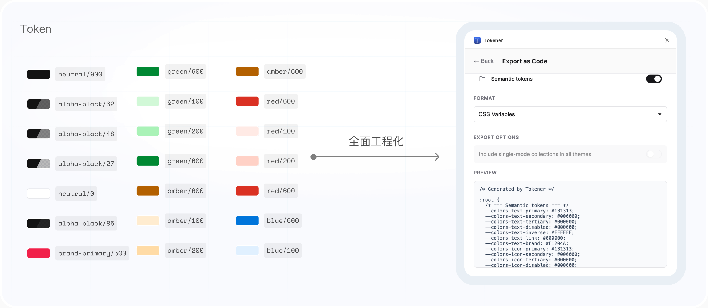
上传Git代码仓库实现跨团队/跨业务管理
在制作完成后skill需要被用于不同的设计师、不同的业务甚至是不同的团队来进行使用，所以统一管理和更新非常的重要，在浏览器里就能看、管理、甚至改你远程仓库里的所有代码文件。
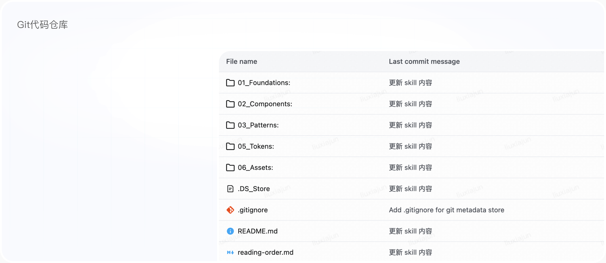
TikTok External Platform Design System Skills
SECTION 04
量化Skill的价值与健康度
在将skill上传git管理后，需要验证skill的使用价值以及后续的健康度，首先坚持组件还原度原则，只有在还原度以及组件的交互逻辑达到98%以上采用验证并使用去推导“美”的页面
质量维度：衡量组件的还原度
在制作完skill不可能会达到100%还原，这也是未使用npm包的劣势，需要不断的调整md或者css和json进行优化。需要不断的监控组件的还原效果。
效能维度：对比D2C流程的还原时长以及后续的维护和迭代
在进行d2c流程时，涉及10+的页面的组件和交互逻辑需要花费5天左右的时间去维护，且不能保证同一个组件的完整性。在制作完skill尝试进行还原仅花费0.5天还原10+以上的页面，且部分时间处于等待，仅有小部分组件逻辑和细节待调整，节约90%的时间。
当然这仅仅是他最不起眼的效能，后续可以便于多个设计师去迭代操作，甚至扩展新业务......
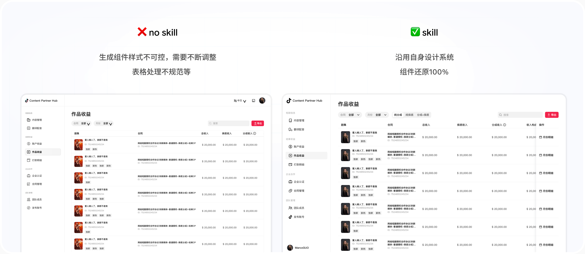
AI Coding如何去赋能到团队
以TikTok Local Service为例
以下只展示结果,具体推演过程在飞书文档当中,并使用过往需求进行验证 Next
SECTION 01
NPM包+SKILL快速产出需求DEMO
通过npm+skill的方式能够让生成的demo符合我们的设计系统和规范,这时让AI来读取对应业务需求的PRD能够生成大概的方案,通过自己对需求的理解,可以对应的让AI快速调整初版方案,但是这远远未达到交付的地步,但是用AI继续调整这时会产生几个弊端,1是方案的历史无法保留,2是AI对应的不确定性尚可还在所以对应需要还原到figma可编辑的设计稿
先进行一个简单的小测试
通过纯文字prompt来进行coding,使用在组件覆盖率高的场景看看,与线上页面效果几乎完全一致
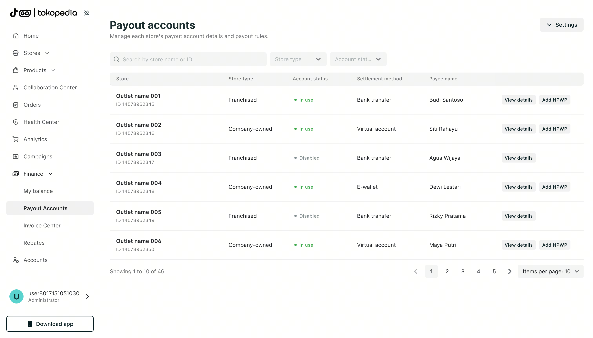
小需求迭代
首先尝试一些简单需求的迭代,这类需求通常加一个组件或者调整一些小布局即可达到交付要求,这里我们尝试对管理门店页新增offline的小需求进行生成
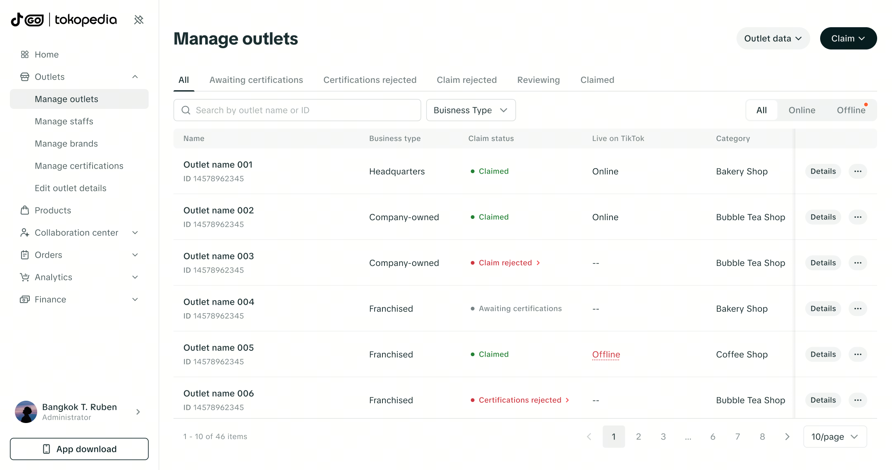
那一个大的链路的改造是否能达到预期呢?——以发品需求为例
生成的效果可以快速产出交互方案的demo,作为设计师这时需要具备一定的用户体验能力,去评判交互是否合理,虽然生成的效果符合我们的设计系统,但是达到交付还是不太够,所以接下来讲讲述如何进行Code to Design的方式
SECTION 02
Code to Design(C2D)达到需求交付级别
以上通过AI生成的Demo虽然整体不错,但是难以达到交付级别,为了在调整过程中保留历史版本和稳定性的原因,我们在进行C2D的流程,在figma当中转为可编辑的设计稿(且里面的组件和Token必须是设计这边的规范)进行方案推演和交付
还是以发品链路优化需求生成的demo转为可编辑的设计稿
在figma中生成的效果符合设计师对设计稿的要求,页面的组件从组建库调用,AI并非使用Frame进行制作,且Token也是设计侧使用了Design Token
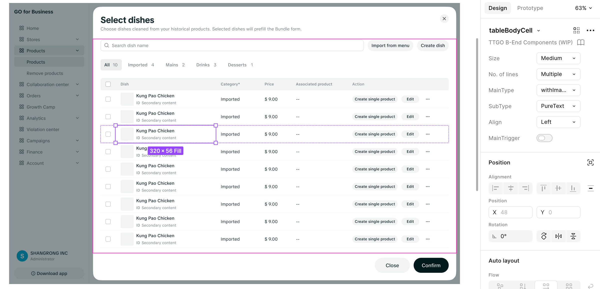
SECTION 03
如何赋能团队?
通过上述方案整个demo的产出+还原设计稿的耗时为0.75pd, 对比纯手搓初稿耗时1.75pd,整体提效 +57.14%,那我们怎么运用到日常业务团队当中去呢?
探索开国不同的风格
针对每次开国,我们都有针对每个国家本地化的设计,对应更新并调整设计风格,但前期的设计风格能否运用AI进行探索呢,我认为是可以的. 方式一:目前npm的组件为最初的印尼绿色版本,使用demo可以快速产出一些页面,在figma当中快速转为可编辑的设计稿,这里调用的是设计侧的组件库,我们在组件库可以更新符合开国最新组件样式在转为可编辑的设计稿,这样可以直接呈现并修改
方式二:写多版skill的方案,针对不同国家的设计风格进行更新skill,用AI Coding快速生成
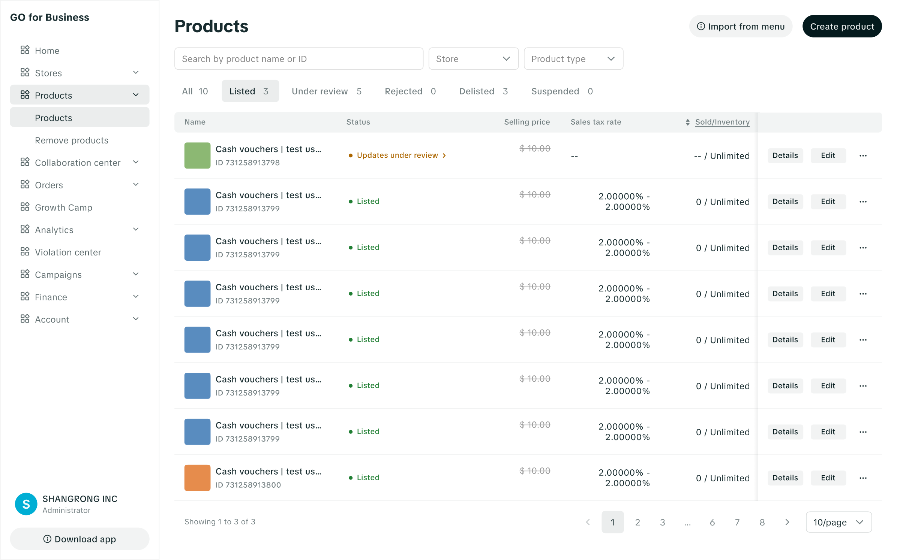
该工作流可以快速完成方案的验证,帮助设计师提效,以及在未来开国等需要探索一些设计风格的页面场景.
将该方式沉淀为分享经验文档同设计师讨论
如何将生成的DEMO完成代码交付?
先说思路:首先要跟前端沟通让他给我们远端仓库(类似github)的权限,然后配置环境,然后用trae拉下远端仓库的最新代码,这一步是去完成本地化(本地化代码),然后看取现网的页面,然后coding后是需要去在你的本地文件代码给git到远端代码仓才能看见 也就是创建分支代码,然后跟前端沟通合并分支的事情)之后就和开发沟通跟车上线的事情.